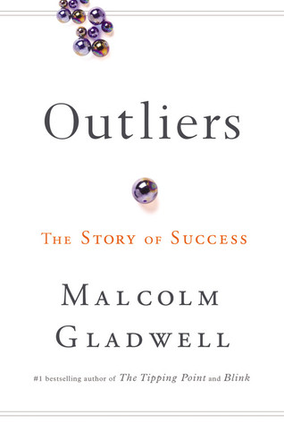

Informatief
| Titel | Auteur | ISBN | Cover |
| A Brief History of Time | Stephen Hawking | 9780553380163 |  |
| A Short History of Nearly Everything | Bill Bryson | 9780767908184 | |
| Blink | Malcolm Gladwell | 9780316010665 | |
| Fast Food Nation | Eric Schlosser | 9780060838584 | |
| Freakonomics | Steven D. Levitt | 9780061234002 | |
| On Writing | Stephen King | 9780743455961 | |
| Outliers | Malcolm Gladwell | 9780316017923 |  |
| Quiet | Susan Cain | 9780307352149 | |
| Stiff | Mary Roach | 9780393324822 |  |
| The Tipping Point | Malcolm Gladwell | 9780316346627 |